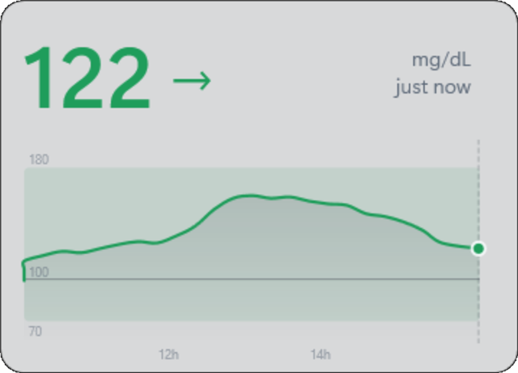
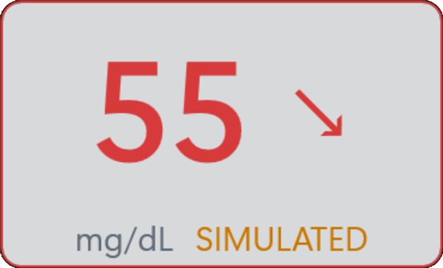
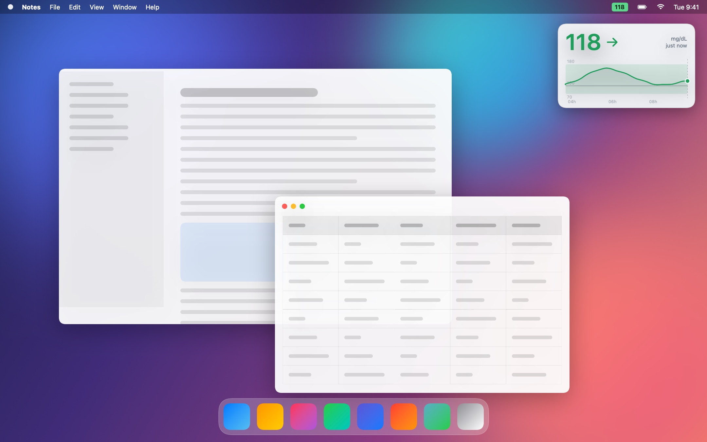
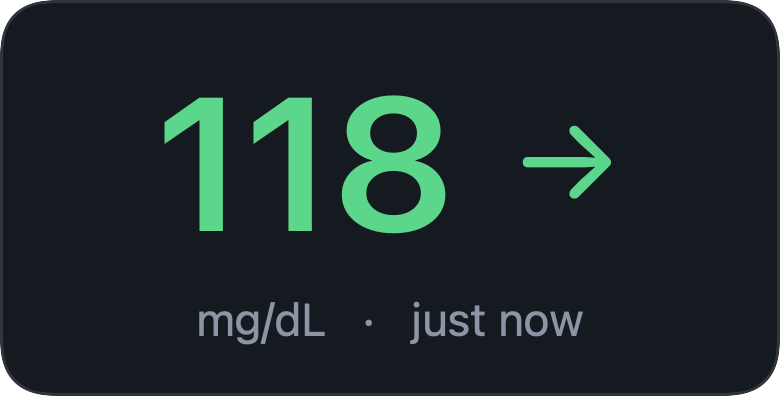
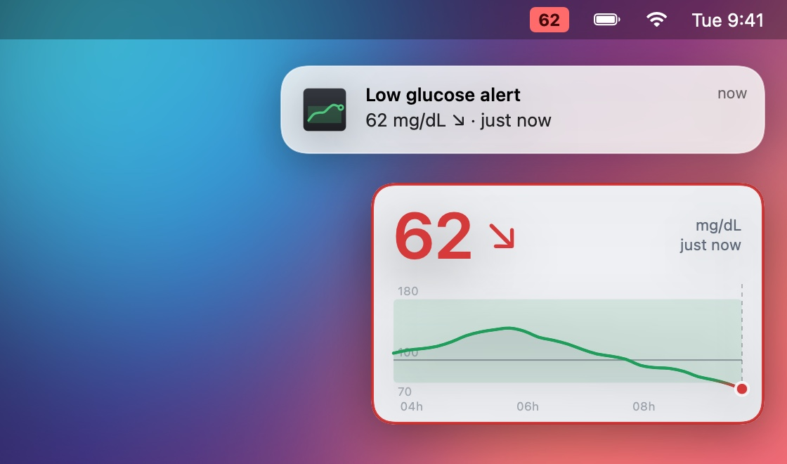
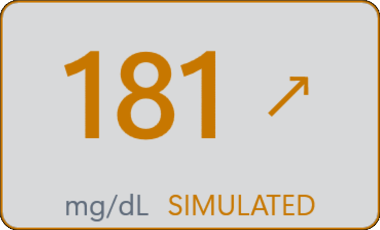
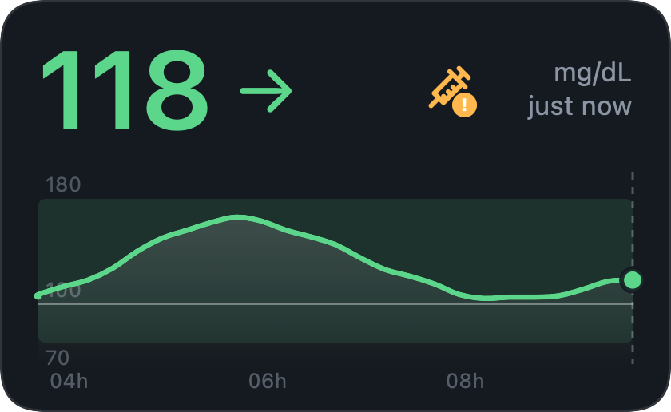
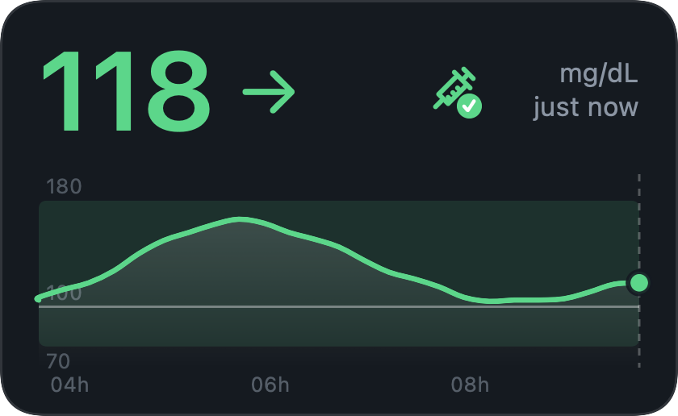

Your FreeStyle Libre glucose, always visible on your desktop.
A small widget that keeps your value, trend and graph next to whatever you are working on, so you do not have to pick up your phone.
All downloads and older versions
- Windows 10 or 11 (64-bit)
- macOS 13 or newer, Apple Silicon or Intel
- MIT licence
- No ads, no account with us


Getting started
Three steps, and you only do them once.
-
Invite a follower
In the LibreLink phone app open Connected apps > LibreLinkUp and invite a second email address.
Then install the official LibreLinkUp app on a phone, create the account there with that email and accept the invitation. There is no website sign-up (see www.librelinkup.com). This also clears the terms and email verification that signing in needs.
-
Download
Get the file for your computer from the latest release. There is nothing else to install.
- Windows:
LibreMonitor-win-x64.exe - Mac:
LibreMonitor-mac.zip
- Windows:
-
Sign in
Start it and sign in with the follower account, not your main one. Your value appears within a minute.
- Windows: run the exe. If Windows shows a blue warning, see first-open warnings.
- Mac: unzip, drag LibreMonitor.app into Applications and open it. macOS warns the first time, see first-open warnings. The app has no Dock icon: look for the widget and the menu bar item.
How it works
The phone app reads the sensor and uploads to LibreView. Libre Monitor Desktop does not talk to the sensor. It signs in to the unofficial LibreLinkUp follower service and only reads what your phone has already uploaded.

On your desktop, wherever you want.
A glance at your glucose value, trend and graph, without picking up your phone. Put the widget in the corner you like, on top of your windows or behind them.
Hidden? The tray or menu bar still shows the value.
Always in view
Value, trend and graph in a small widget that can stay on top.
Hover for detail
Hover the graph for the value and time of any reading.
Customize
Resize it, hide the graph, choose 3, 6 or 12 hours, mg/dL or mmol/L, light, dark or transparent.
Read-only, no history
It never changes your account or talks to the sensor, and keeps no readings on your computer. For history, use LibreView.
Optional alerts
Your own low and high limits: a notification, a sound and a coloured border, with reminders and snooze.
Sensor end date
See when your sensor ends, with optional alerts.
Insulin reminder
Set an optional reminder at your usual time, with an icon to help you remember it.
Your login stays yours
Stored encrypted on your PC or in your Mac's Keychain. Sent only to LibreView.
The colours for low, in range and high are for display only. They are not alarms.

Hide the graph and the value fills the widget, at any size.
First-open warnings
Neither app is signed with a paid certificate, so Windows and macOS each show a warning the first time. Both are expected and do not mean the file is damaged.
Windows SmartScreen: "Windows protected your PC"
The executable is not code-signed, so the first time someone runs it, Windows SmartScreen shows a blue window. This is expected for any unsigned program from an unknown publisher. To run it:
- Click More info.
- Click Run anyway.
Windows remembers the choice for that file. If the file came from the internet, you can also tick Unblock in the file's Properties before running it. Removing the warning needs a code-signing certificate, which costs money every year. Some antivirus tools may also flag the single-file build.
macOS: "cannot check it for malicious software"
The Mac app is not notarised by Apple (that needs a paid Apple Developer account), so the first time you open it macOS says it cannot check it for malicious software. To open it:
- Control-click (right-click) LibreMonitor.app in Applications and choose Open, then Open again. On recent macOS versions you may instead have to open System Settings > Privacy & Security and click Open Anyway.
- If that does not work, run this once in Terminal, then open the app normally:
xattr -dr com.apple.quarantine /Applications/LibreMonitor.app
The app is signed with a free ad-hoc signature, which Apple Silicon Macs require in order to run it at all.
Using the widget
Position, size and preferences are remembered. Right-click the widget to open the menu.
| To do this | Do this |
|---|---|
| Move it | Drag it |
| Resize it | Drag any edge or corner |
| Change the time range | Mouse wheel over the widget, or the menu |
| Hide or show the graph | Menu > Show graph (untick it for a compact widget with just the value) |
| See a reading's value and time | Hover the graph |
| See when the sensor ends | Hover the unit and age text, or open the menu |
| Set how long your sensor lasts | Menu > Sensor duration (14 or 15 days) |
| Refresh now | Double-click the value. It updates by itself every minute, so a refresh is only needed now and then; repeated clicks are ignored so the service is not overloaded |
| Switch mg/dL and mmol/L | Menu > Units |
| Light, dark, transparent or follow the system | Menu > Appearance |
| Set up low and high alerts | Menu > Alerts… |
| Pause alerts | Menu > Snooze alerts (for a while, or until you turn them back on) |
| Set up the insulin reminder | Menu > Set up the insulin reminder… (or Menu > Alerts…) |
| Mark an insulin dose as administered | Click the syringe and confirm (or Menu > Insulin: mark as administered) |
| Turn the insulin reminder off | Menu > Turn off the insulin reminder |
| Snap to a screen corner | Menu > Move to corner |
| Hide it to the tray or menu bar | Click the ✕, or Menu > Hide to tray |
| Bring it back | Click the tray or menu bar icon |
| Turn the tray icon off | Menu > untick Show tray icon (the ✕ then exits instead of hiding) |
| Sign out | Menu > Sign out and exit |
| Quit | Menu > Exit, or the tray icon's menu |
Alerts
Open Menu > Alerts… to turn on a low alert, a high alert, or both, and set your own limits in mg/dL or mmol/L. They are off until you turn them on. Use Send test alert to see what one looks like.
- WhenIt alerts you when a reading goes below the low limit or above the high limit. The widget border turns red (low) or amber (high) while the reading stays out of range.
- RemindersWhile still out of range you can be reminded every 15, 30 or 60 minutes, or not at all.
- SnoozePause notifications for 30 minutes, 1 hour or 2 hours, or until you turn them back on. If you are still out of range when it ends, you are alerted then.

A low alert: a system notification, and a red border around the widget.

Insulin reminder
Optional. Set the time of your daily insulin and get a reminder. A small syringe on the widget turns green when you mark the dose as administered, so you can see at a glance whether you already did. It is off until you turn it on.


Troubleshoot
The widget says what is wrong in the small status text next to the value.
| It says | What it means | What to do |
|---|---|---|
| reconnecting | A temporary problem: no internet, or LibreView is busy. After a couple of minutes it also says how old the value is ("not updating · 12 min ago"). | Nothing. It tries again every minute. |
| sign-in needed | The follower email or password is no longer accepted. | Menu > Sign out, start it again and sign in. |
| service changed | LibreLinkUp is no longer answering the way this app expects, three checks in a row. Abbott may have changed or blocked the unofficial service. | Menu > Check for updates…. A notification tells you once, and clicking it opens the same page. |
Value looks old? The widget updates by itself every minute. To fetch a new reading right away, double-click the value. It says “updating…” until it arrives. Only a few manual refreshes are allowed every ten minutes, so extra double-clicks are ignored.
This app relies on a service that Abbott does not publish for third parties, so it can stop working without warning. If you are already on the newest version, it needs a fix from its developer: please report it on GitHub. Your own data and your LibreLink app are not affected either way. Menu > About shows which version you have.
FAQ
Does it talk to my sensor?
No. Your phone reads the sensor and uploads to LibreView. This app only reads what the phone has already uploaded, through the LibreLinkUp follower service.
Does it store my glucose readings?
No. There is no history and no export. It keeps your encrypted login and your preferences, and for the insulin reminder one time: when you last tapped “administered”. For history, use LibreView.
Where is my login sent?
Only to LibreView. It is stored encrypted on your PC (Windows) or in your Keychain (Mac). Nothing goes to any other server, and the code is open for you to check.
Why do I need a second, follower account?
The unofficial service this app uses is the one meant for people who follow someone else’s glucose, so it needs a follower login. You can follow your own account, using a second email address.
Can I use it to decide on treatment or insulin?
No. It is not a medical device. Alerts and the insulin reminder are memory aids and can fail, so keep your sensor’s own alarms on and follow your care team’s instructions.
It stopped working. Why?
It relies on a service Abbott does not publish for third parties, which can change without warning. See the troubleshooting table, check for a newer version, and if it still fails please tell us on GitHub.
Built in the open
The code is on GitHub: read it, build it yourself, report problems or send improvements. Contributions are welcome.
Licence
Code under the MIT licence. Documentation under CC BY 4.0. Bundled software is listed in the third-party notices.
Build and contribute
Developer instructions for the Windows (.NET) and macOS (Swift) apps are in the README. Before sending changes, read CONTRIBUTING: the app stays read-only, keeps no glucose data, and sends nothing anywhere except LibreView.
Security
Found a security problem? Report it privately, as described in SECURITY.
About
Created by a diabetic patient, who happens to be a software developer, tired of having to pick up the phone to check my glucose levels. It started as a tool for myself, and I am sharing it, free and open source, in case it helps others in the same situation.
Independent
Not affiliated with Abbott in any way: it is not made, approved or supported by them. FreeStyle, Libre, LibreLink, LibreLinkUp and LibreView are Abbott's trademarks, used here only to say what this software works with.
Not for profit
A free hobby project, made as a personal project and not for money. It is not sold, has no ads and earns nothing.
Use with care
Not a medical device. It relies on an interface that Abbott does not publish for third parties, which may change or stop working at any time. Provided as is, without warranty.
Give it a try
Free, open source and read-only. If it helps, or breaks, we would like to hear about it.